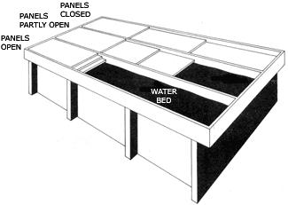

A great deal of a building's summer heat gain comes in through its east and west windows. You can control this temperature buildup to a large extent by putting a screen of vegetation, a bamboo shade, a bris-de-soleil, or an extra pane of glass right over (but a little distance from) the glass already in the opening. This can, of course, become somewhat expensive if you have a large number of windows to cover . . . since the necessary trellises and/or framing must be built strongly enough to withstand wind, rain, etc.
For this reason, you may find it easier and less costly to fit your east/west windows on the inside with insulated shutters made of either fiberglass or urethane foam. That's shutters, not drapes. Interior drapes are less effective and can even increase heat gain within a house unless they're well-sealed around their edges and across the top and bottom.
South windows are a different story. If properly protected by an overhang, they can be shaded from the high summer sun and allowed to admit Ole Sol's warming rays when the sun is low in the winter sky. You can calculate just how far such a projection should extend out over any window by multiplying the height (in inches, feet, meters, or any other unit of measurement) of the opening to be protected by your home's latitude and then dividing by fifty. The overhang can then be constructed of either solid material or slotted . . . or covered with vegetation.
The colder the climate in which you live, the fewer north windows your house should have. Cover the ones you don't need-inside and out-with insulation and board them over. Or fit them with insulated internal and/or external shutters which can be opened during the summer but tightly fastened against frigid January winds.
North, south, east, or west (but especially east or west) . . . any window will admit less heat during the summer if it's protected by one or more large trees. Direct shade accounts for much of the saving, but the evapo-transpiration of the foliage (which most people completely overlook) is quite important too. The microscopic mist of water that a large tree expels into the air on a hot summer day can cool the surrounding atmosphere as much as a multi-ton air conditioner.
Back
Harold Hay's Sky Therm heating/cooling system has been called a big water bed covered by moving, insulated panels. And that's all it is.
A three-bedroom pilot model of the Hay design is now operating quite satisfactorily in Atascadero, California. The house is topped with panels mounted on tracks so that individual sections of the "roof" can be run back and forth to completely cover or largely expose the gigantic black plastic water bed underneath. The bed, in turn, lies directly on the ceiling of the rooms below.
During the summer the sliding roof panels are kept closed during the hot days and are opened at night. This allows the water to act as a heat sink for the house during daylight hours and to radiate the warmth it collects into the sky after the sun has gone down.
The process is reversed in the winter. Then, the panels are opened during sunshiny days so that the black containers of water can absorb solar energy. When the insulating roof is then closed at night, the heat in the water radiates down through the ceiling in each room and warms the living space below.
Back
The construction and operation of Steve Baer's original "drum wall" solar heating/cooling system is very easy to understand. The whole setup-complete-contains no expensive valves, pumps, plumbing, exotic fluids, eutectic salts, specialized plastic membranes, or space age photovoltaic cells. Nothing but 55-gallon metal drums (available free-for-the-hauling in most parts of the country) stacked up behind a wall of glass windows (recycled are OK) that can be covered and uncovered by a hinge-down, insulated panel operated by a small hand winch.
To fine-tune the system, face the let-down panel with aluminum (so that it becomes a giant reflector). You can also paint the drums black on their out-ends (so they'll absorb solar energy better) and white on the ends that point into the house (to improve their radiation characteristics and their appearance). That's it.
In the winter, the insulated panel is cranked down on bright days to allow the sun to shine directly through the glass and warm the water in the drums. Additional heat is directed at the barrels at this time as the aluminized surface of the panel reflects much of the solar-fall it receives through the full-length window too.
During winter nights and on cloudy days, of course, the hinged panel is kept up. This prevents the warmth stored in the drums from radiating back out through the glass . . . and allows it to heat the living space behind the containers.
That's all very obvious. What's frequently forgotten, however, is that the above process can work just as well in reverse. The water in the barrels, if desired, can also be used to absorb excess heat from the house for eventual radiation out through the glass. This is accomplished in the summer merely by leaving the insulated panel up during long, hot days . . . and then cranking it down at night.
Back
|
 |
|
|